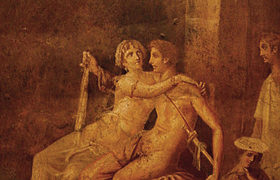

Così Virgilio (70-19 a.C.), nel suo grande poema celebrativo, l’Eneide, affida alle profetiche parole che Anchise consegna al figlio Enea lo svelamento della missione storica di Roma nel mondo:
Altri foggeranno più elegantemente statue di bronzo
che sembrano vive (lo credo davvero),
scolpiranno nel marmo volti che sembrano vivi,
patrocinerranno meglio le cause
e descriveranno col compasso le vie del cielo
e prediranno il corso delgi astri:
tu, o romano, ricordati di governare col tuo imperio i popoli
(queste saranno le tue arti)
e di dettare le condizioni di pace,
risparmiare chi si sottomette e debellare i superbi
(Eneide, VI, 847-53, trad. it di G.Borghi)